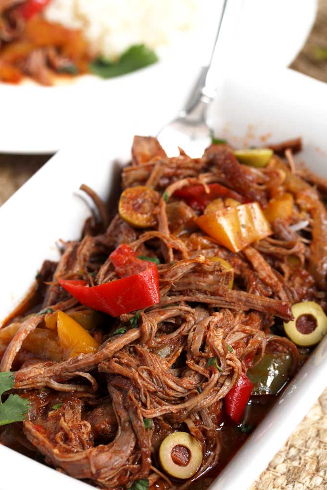
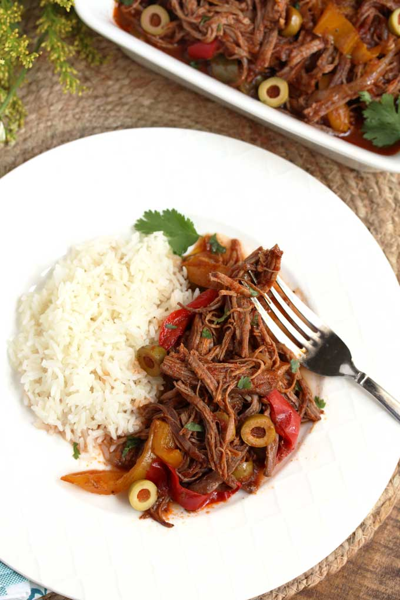
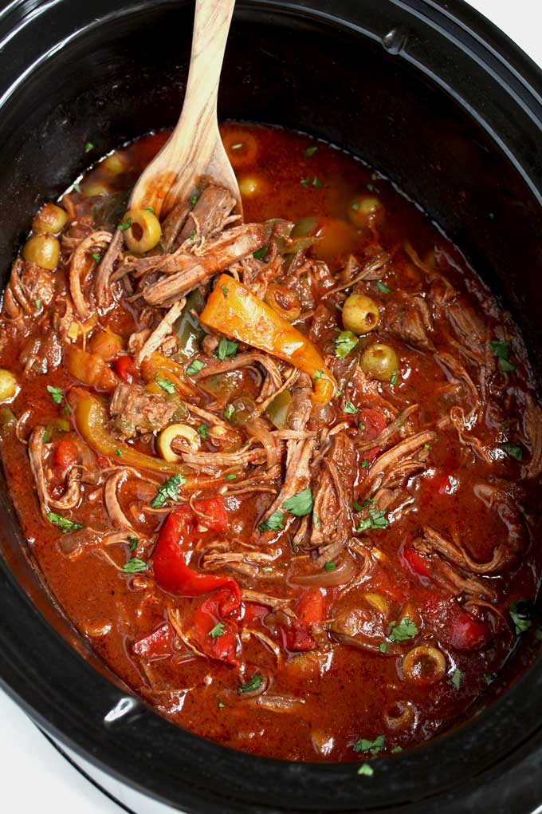

CUBAN ROPA VIEJA (SLOW COOKER RECIPE)
Ingredients
- 2 pounds beef chuck roast
- Salt and pepper, to taste
- 1/4 cup olive oil
- 1 large yellow onion, thinly sliced
- 1 large green bell pepper, thinly sliced
- 1 large red bell pepper, thinly sliced
- 1 teaspoon dried oregano
- 2 teaspoons ground cumin
- 2 teaspoons sweet paprika
- 1/2 cup dry white wine
- 1 cup beef broth
- 16 ounces crushed tomatoes
- 1 cup pimiento or manzanilla Spanish olives, rinsed and
- drained (optional)
- 1/4 cup chopped fresh parsley
Cuban Ropa Vieja features tender shredded beef simmered in the most flavorful sauce of tomatoes, bell peppers and spices. This hearty Ropa Vieja recipe is made easily in the slow cooker.
My love for Cuban food runs deep! One of my favorite Cuban recipes is this tasty and succulent Slow Cooker Cuban Mojo Pork made with citrus, garlic and spices. A simple crock pot recipe that requires minimal prep and delivers incredible flavors!
There is something wonderful about cooking beef low and slow. It always produces tender, juicy, melt-in-your-mouth, delicious beef. This slow cooker beef recipe delivers just that! Amazingly tender beef that is full of Cuban flavors!
There is something wonderful about cooking beef low and slow. It always produces tender, juicy, melt-in-your-mouth, delicious beef. This slow cooker beef recipe delivers just that! Amazingly tender beef that is full of Cuban flavors!
Slow Cooker meals are so convenient, especially during busy week days. There’s always so much going on with work and school that coming home to a delicious homemade meal cooked in the crock pot is really a treat.
